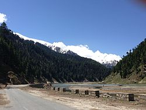
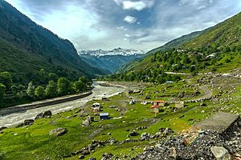

Naran (Urdu: ناران ) is a town and most popular tourist destination in upper Kaghan Valley in Mansehra District of Khyber Pakhtunkhwa province of Pakistan. It is located 119 kilometers (74 mi) from Mansehra city at the altitude of 2,409 meters (7,904 ft). It is located about 65 kilometers (40 mi) away from Babusar Top.[1] It is one of the most popular tourist attraction locally as well as internationally.[2] Naran valley is also Pakistan's most visited Valley, around 1.5 million people visit Naran valley every year.
Naran Kaghan is famous as a tourist destination, owing to its pleasant weather in peak season every year thousands of tourists rush to explore the valley. It is also the gateway to Gilgit Hunza in Summers by Babusar Pass. Naran Bazaar is very crowded in the summers with hotels and restaurants offering their services. In 2020, the government expects that 5 million tourists will explore the valley
Naran has a humid continental climate (Koppen Climate Classification Dfb).[3] There is significant rainfall in summers and heavy snowfall in winters. The region is Alpine in geography and climate, with forests and meadows dominating the landscape. The weather usually remains cloudy throughout the year. During winters the temperature often remains below 0 °C with heavy snowfall. In summers the temperature rarely exceeds 15 °C with heavy rainfall. Naran remains busy in summer, starting earlier, and tourism is extending up to late in the fall. The average annual temperature in Naran is 10.1 °C.
Babusar Pass or Babusar Top (Urdu: درہ بابوسر) (elevation 4,173 metres or 13,691 feet)[1][2] is a mountain pass in Pakistan at the north of the 150 km (93 miles) long Kaghan Valley, connecting it via the Thak Nala with Chilas on the Karakoram Highway (KKH). It is the highest point in Kaghan Valley that can be easily accessed by cars. The Babusar Pass connects Khyber Pakhtunkhwa with Gilgit-Baltistan.[3] It is one of the most dangerous routes in Pakistan. Every year, many deaths happen here due to the mountainous slopes, which are among the most dangerous in the world. The most common reason for death is the brake failure of cars due to inexperience.[3] Babusar Top was originally known as Babur Top, originating from the fact that the Mughal emperor Babur used to pass through this area in the early 16th century. Nowadays however, it is commonly referred to as Babusar Top
The Kaghan Valley is at its best during summer (from May to September). In May, the maximum temperature is 11 °C (52 °F) and the minimum temperature is 3 °C (37 °F). From the middle of July up to the end of September the road beyond Naran is open right up to the Babusar Pass. However, movement is restricted during the monsoon and winter seasons. The Kaghan area can be accessed by road via the cities of Islamabad or Peshawar.
Naran is a medium-sized town situated in upper kaghan valley which is a part of Khyber Pakhtun khwa province of Pakistan. It is one of the most beautiful part of northern areas in pakistan which is elevated 2500 meters above sea level. Its beauty captures a lot of people towards itself and thus it is a famous resort for tourists and trekkers. The weather of Naran is very cold. The ice on the moutain tops never melts, even in months of June and Jully there are glaciers and mountains are covered with snow. The road to naran valley travells alongside with River Kunhar which Starts from the glaciers of Kaghan and flow deep down in mansehra. The local languages of Naran Valley are Hindko and Gojri but every individual overthere can speak and understand urdu. The dress is Shalwar kameez with long bottom shalwars. Most of the people are tall. Average height of males was about 5”8’ or 5”9’.

The Kaghan Valley (Urdu: وادی کاغان) is an alpine valley located in the Mansehra District of Khyber Pakhtunkhwa, Pakistan.[1][2][3] The valley covers a distance of 155 kilometres (96 mi)[4] across northern Pakistan, rising from its lowest elevation of 650 m (2,134 ft) to its highest point at the Babusar Pass around 4,170 m (13,690 ft).[5] Landslides triggered by the devastating 2005 Kashmir earthquake destroyed many passes leading into the valley, though roads have since been largely rebuilt. The Kaghan is a highly popular tourist attraction
The Kaghan Valley is located in Khyber Pakhtunkhwa, Pakistan (formerly known as the North-West Frontier Province), and borders the Pakistani-administered territories of Gilgit-Baltistan and Azad Jammu and Kashmir to the north and east, respectively. The 155-kilometre-long valley is enveloped by the Lower Himalayan mountain range, resulting in an alpine climate and the prevalence of pine forests and alpine meadows.[9] Alongside the flow of the Kunhar River, the valley features glaciers, crystal-like clear lakes, waterfalls and frosty mountain streams. The Kaghan is famous for its scenic beauty and landscapes, resulting in its popularity as a summertime resort amongst locals and tourists alike
Saiful Muluk (Urdu: جھیل سیف الملوک) is a mountainous lake located at the northern end of the Kaghan Valley, near the town of Naran in the Saiful Muluk National Park. At an elevation of 3,224 m (10,578 feet) above sea level, the lake is located above the tree line, and is one of the highest lakes in Pakistan.
.jpg)
Saiful Muluk was formed by glacial moraines that blocked the water of the stream passing through the valley.[5] The Kaghan Valley was formed in the greater Pleistocene Period dating back almost 300,000 years when the area was covered with ice. Rising temperatures and receding glaciers left a large depression where glaciers once stood. Melting water collected into the lake.